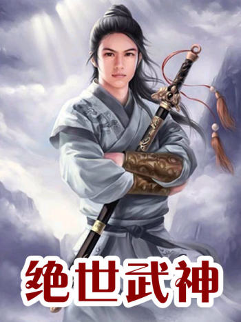
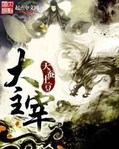

<section id="content">
	<div id="container">
		<div class="manga-classic">
			
			<p class="manga-title">God of Martial Arts</p>
			<p class="manga-genre"><span class="genre">Genre:</span>Action, Drama, Fantasy, Martial Arts</p>
			<p class="manga-description"><span class="description">Description:</span> <span class="details">
			Lin Feng tried to be the diligent and hard-working good guy. He studied hard, did his best to make his family proud and not get into trouble, but when he saw a girl being taken advantage of, he had to intervene. He had been tricked, sentenced to 10 years in jail and framed for a crime he never committed, all was lost. If his life was over he would take those who ruined his life with him. Suddenly he opens his eyes again. He is not dead, but alive in the body of the Lin Feng of a different world. This Lin Feng had been killed as trash of cultivation. This world where the strong had no regard for human life and would kill freely if they had the strength.</span> </p>
		</div>

		<div class="manga-classic">
			
			<p class="manga-title">The Great Ruler</p>
			<p class="manga-genre"><span class="genre">Genre:</span>Action, Fantasy, Xianxia, Adventure</p>
			<p class="manga-description"><span class="description">Description:</span> <span class="details">
			The Great Thousand World. It is a place where numerous planes intersect, a place where many clans live and a place where a group of lords assemble. The Heavenly Sovereigns appears one by one from the Lower Planes and they will all display a legend that others would desire as they pursue the road of being a ruler in this boundless world. A Boy from the Northern Spiritual Realm comes out, riding on a Nine Netherworld Bird, as he charges into the brilliant and diverse world. Just who can rule over their destiny of the path of becoming a Great Ruler? In the Great Thousand World, there are many that strive to become a Great Ruler.</span> </p>
		</div>
	</div>
</section>